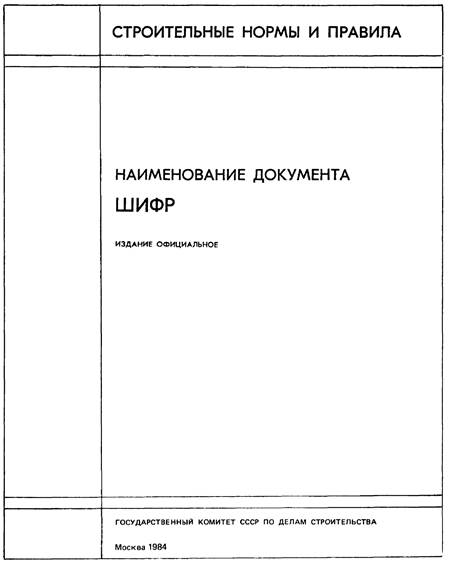
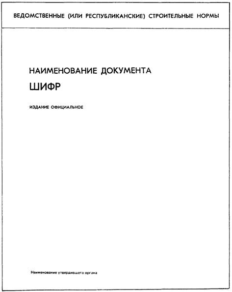
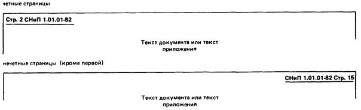

СТРОИТЕЛЬНЫЕ НОРМЫ И ПРАВИЛА
СИСТЕМА
НОРМАТИВНЫХ ДОКУМЕНТОВ
В СТРОИТЕЛЬСТВЕ
Правила изложения и оформления
нормативных документов
СНиП 1.01.03-83*
ГОСУДАРСТВЕННЫЙ КОМИТЕТ СССР ПО ДЕЛАМ СТРОИТЕЛЬСТВА
Москва 1984
СОДЕРЖАНИЕ
|
Приложение 1 Обязательное. Оформление обложек и страниц нормативных документов. 5 Приложение 2 Обязательное. Изложение и оформление изменения нормативного документа. 8
|
РАЗРАБОТАНЫ, ВНЕСЕНЫ И ПОДГОТОВЛЕНЫ К УТВЕРЖДЕНИЮ Отделом технического нормирования и стандартизации Госстроя СССР (В.И. Сычев - руководитель, Б.Я. Говоровский, Ю.Н. Пастухов).
СНиП 1.01.03-83* является переизданием СНиП 1.01.03-83 с изменением № 1, утвержденным постановлением Госстроя СССР от 24 октября 1984 г. № 178.
|
Государственный комитет СССР по делам строительства (Госстрой СССР) |
Строительные нормы и правила |
СНиП 1.01.03-83* |
|
Система нормативных документов в строительстве. Правила изложение и оформления нормативных документов |
Взамен СНиП I-1-74 |
Настоящие строительные нормы и правила устанавливают правила изложения и оформления нормативных документов, входящих в Систему нормативных документов в строительстве (СНиП 1.01.01-82*), и их изменений.
1. Наименование нормативного документа должно быть кратким.
2. Нормативный документ должен иметь вводную часть. Во вводной части документа указывают область его распространения, уточняют объекты нормирования или ограничивают сферу действия документа.
Для определения области распространения документа применяют выражение: «Настоящие нормы (правила, положение) распространяются на …»
При ограничении области распространения документа указывают, на что документ не распространяется.
При уточнении объекта нормирования следует применять выражение «… нормы (правила, положение) устанавливают …».
3. Изложение требований должно быть кратким (без повторений, пояснений и обоснований) и четким, исключающим возможность различного толкования.
4. При изложении обязательных требований в тексте нормативного документа должны применяться слова «должен», «следует», «необходимо» и производные от них.
Как исключение допускается ограничивать обязательность требований словами «как правило». Слова «как правило» означают, что данное требование является преобладающим, а отступление от него должно быть обосновано.
5. В нормативном документе должны применяться научно-технические термины, обозначения и определения, установленные общесоюзными нормативными документами и стандартами.
Для новых терминов, отсутствующих в действующих документах, в необходимых случаях дается их определение.
6. В зависимости от содержания текст документа может быть разбит на разделы. Заголовки разделов выделяют полужирным шрифтом.
Разделы и пункты в нормативном документе нумеруются арабскими цифрами. Пункты обозначают номером раздела с добавлением через точку
порядкового номера. В каждом разделе нумерация пунктов начинается с первого номера, например, «1.1; 1.2; 1.3; 3.1; 3.2; 3.3». При наличии в документе лишь одного раздела дается порядковая нумерация пунктов без обозначения номера раздела.
Разделы могут делиться на подразделы, имеющие заголовки, при этом подразделы не нумеруются и сохраняется сквозная нумерация пунктов в пределах всего раздела.
Подпункты следует начинать с абзаца, они не нумеруются и знаком «тире» не отделяются. При необходимости подпункты обозначаются строчными буквами русского алфавита со скобкой.
Допускается при необходимости пункты, развивающие содержание какого-либо пункта, нумеровать тремя цифрами: 2.5.1; 2.5.2 и т.д.
|
Внесены |
Утверждены |
Срок |
7. Все приложения должны иметь сквозную нумерацию арабскими цифрами без знака №.
Приложения должны иметь общую с текстом документа нумерацию страниц.
В приложениях разделы, пункты, таблицы, формулы, графические материалы нумеруются в пределах каждого приложения.
Степень обязательности приложения должна быть указана на его первой странице.
На обязательные и рекомендуемые приложения должны быть ссылки в тексте документа с указанием степени обязательности приложения, например: «… согласно обязательному приложению 1».
8. Следует избегать включения примечаний в текст нормативного документа. В примечаниях к пунктам или таблицам допускается помещать только поясняющие или справочные данные.
Примечания к таблицам должны помещаться под таблицами.
Если имеется одно примечание, то его не нумеруют и после слова «Примечание» ставят точку.
Если примечаний несколько, то после слова «Примечания» ставят двоеточие. Примечания нумеруют арабскими цифрами.
Во вводной части документа помещать примечания не допускается.
9. В тексте нормативного документа не допускается:
а) применять для одного и того же понятия различные термины, близкие по смыслу (синонимы), а также иностранные слова и термины при наличии равнозначных слов и терминов в русском языке;
б) применять обороты разговорной речи, техницизмы и профессионализмы;
в) применять произвольные словообразования (например, саноборудование, пожнадзор);
г) сокращать обозначения единиц измерения, если они употребляются без цифр, за исключением единиц измерения в головках таблиц и в расшифровке буквенных обозначений, входящих в формулы;
д) применять сокращение слов, кроме установленных стандартами и правилами русской орфографии;
е) заменять слова буквенными обозначениями, например «L трубы» вместо «длина трубы»;
ж) использовать в тексте математический знак минус (-) перед отрицательными значениями величин, в том числе для отрицательной температуры, вместо этого знака следует писать слово «минус», кроме случаев написания ± (плюс - минус);
и) употреблять математические знаки без цифр, например = (равно), ≤ (меньше или равно), ≥ (больше или равно), ≠ (не равно), а также № (номер), % (процент);
к) применять условные сокращения стандартов (ГОСТ, ОСТ, РСТ, СТП) без регистрационного номера.
10. В нормативном документе должны применяться единицы физических величин согласно Перечню единиц физических величин, подлежащих применению в строительстве, разработанному на основе СТ СЭВ 1052-78 «Метрология. Единицы физических величин» и содержащему необходимые в строительстве единицы физических величин СИ, наименования и обозначения этих единиц, рекомендуемые кратные и дольные единицы, а также внесистемные единицы, допускаемые к применению.
Для величин, выражаемых в ранее не применявшихся единицах, необходимо дополнительно приводить в скобках (в отдельной графе таблицы, на параллельной шкале графика или на оси диаграммы) их эквивалентные значения в ранее применявшихся в соответствующих нормативных документах по строительству для этих величин единицах, которые подлежат изъятию согласно СТ СЭВ 1052-78.
11. В тексте нормативного документа единица измерения, общая для ряда (группы) числовых значений, приводится только за последним числом, например:
5; 8,5; 12 мм;
10×10×40 мм;
20, 50, 100 кг.
12. Цифровой материал в нормативном документе следует оформлять в виде таблиц. Таблицы помещают без заголовков со ссылкой на них в тексте нормативного документа. Нумерация таблиц должна быть сквозной в пределах основного текста нормативного документа.
Помещаемые в конце нормативного документа приложения в виде таблиц должны иметь заголовки.
13. Небольшой по объему цифровой материал, который нецелесообразно оформлять таблицей, должен даваться в виде вывода, например:
коэффициенты отражения ограждающих поверхностей в помещениях должны быть не менее, %:
|
для потолков |
70 |
|
ʹʹ верхних частей стен |
60 |
|
ʹʹ панелей стен |
50 |
|
ʹʹ полов |
24 |
14. Интервалы между числовыми значениями величин в таблицах и выводах следует записывать:
От 50 до 100
Св. 100 до 200
ʹʹ 200 ʹʹ 300
15. При ссылках на стандарты и строительные нормы и правила указывают только обозначение стандарта или шифр документа без наименования. При ссылках на другие документы указывают название документа и наименование утвердившей организации.
Ссылаться следует на стандарт или другой документ в целом или на его разделы и приложения (обязательные и рекомендуемые); ссылки на подразделы, пункты, таблицы и иллюстрации не допускаются.
16. На все таблицы и иллюстрации должны быть ссылки в тексте документа или в приложениях, при этом слово «таблица» или «чертеж» следует писать полностью, если они без номера, и сокращенно, если они пронумерованы, например: черт. 1, табл. 1. При повторных ссылках следует писать «см. табл. 3» или «см. черт. 2» или (табл. 3), (черт. 2).
При ссылках на пункты данного документа слово «пункт» следует писать сокращенно, например согласно п. 2.85, согласно пп. 2.85 - 2.88.
17. Помещаемые в нормативном документе иллюстрации, в том числе чертежи, схемы, диаграммы, должны быть ясными и четкими; чертежи и схемы должны соответствовать требованиям государственных стандартов Единой системы конструкторской документации. Нумерация иллюстраций должна быть сквозной в пределах основного текста документа.
18. Один комплект иллюстраций должен представляться выполненным черной тушью на белой бумаге, кальке или в виде фотокопий; остальные комплекты могут представляться в светокопиях. Подрисуночные подписи должны быть отпечатаны на машинке через два интервала на отдельном листе.
19. На второй странице обложки указываются организации, разработавшие нормативный документ, их ведомственная принадлежность, подразделение, подготовившее нормативный документ к утверждению, и исполнители, наименование и шифр нормативных документов, утрачивающих силу с введением в действие данного. Наименования министерств, ведомств и организаций приводятся сокращенные, установленные для переписки.
20. Ведомственные нормативные документы, утвержденные по согласованию с Госстроем СССР, с органами государственного надзора и другими заинтересованными министерствами (ведомствами) и организациями, должны иметь соответствующую надпись об этом на второй странице обложки ниже данных, предусмотренных в п. 19.
21. Нормативные документы органов государственного надзора, утвержденные по согласованию с Госстроем СССР, должны иметь запись о согласовании (на обороте обложки, на титульном листе или на первой странице), например: «Согласовано с Госстроем СССР 29 января 1982 г., № ДП-472-1».
22. В конце нормативного документа должно помещаться его содержание (оглавление), включающее название разделов, подразделов и приложений с указанием номеров страниц.
23. Проект нормативного документа (включая таблицы и примечания) должен быть напечатан на пишущей машинке через два межстрочных интервала на одной стороне листа.
24. При оформлении проектов нормативных документов следует руководствоваться также требованиями, предъявляемыми издательствами к рукописям технической литературы.
25*. Оформление обложек и страниц нормативных документов следует принимать по обязательному приложению 1.
Отличительные цвета на обложках строительных норм и правил в зависимости от части по Классификатору строительных норм и правил устанавливаются следующие: 1 - красный, 2 - синий, 3 - зеленый, 4 - коричневый, 5 - фиолетовый.
26. Изложение и оформление изменений нормативных документов следует принимать в соответствии с обязательным приложением 2.
27. Правила изложения документа, построения таблиц и выводов, не указанные в настоящем СНиП, допускается принимать по ГОСТ 1.5-68.
Обложка строительных норм и правил

Обложка ведомственных и республиканских строительных норм

Информационные данные, помещаемые на второй странице
обложки
нормативного документа
|
РАЗРАБОТАН(Ы) ___________________________________________________________ [наименования организаций с указанием министерства (ведомства), инициалы и ___________________________________________________________________________ фамилии руководителя темы и ответственных
исполнителей, их ученые степени ВНЕСЕН(Ы) _______________________________________________________________ [наименование министерства
(ведомства) или организации, внесших проект нормативного ПОДГОТОВЛЕН(Ы) К УТВЕРЖДЕНИЮ _______________________________________ (наименование
подразделения утверждающего органа, инициалы и фамилии С введением в действие ______________________________________________________ (наименование и шифр данного документа) утрачивают силу ____________________________________________________________ (перечень утрачивающих силу нормативных документов с указанием их шифров)
|
Данные о согласовании в соответствии с п. 20
Первая страница текста строительных норм и правил
|
Государственный комитет СССР по делам (Госстрой СССР) |
Строительный нормы и правила |
Обозначение (шифр) |
|
Наименование документа |
Взамен - указывается обозначение (шифр) |
ТЕКСТ ДОКУМЕНТА
|
Внесены |
Утверждены |
Срок |
Первая страница текста ведомственных строительных норм
|
Наименование министерства или ведомств СССР (то же сокращение в скобках) |
Ведомственные строительные нормы |
Обозначение (шифр) |
|
Наименование документа |
Взамен - указывается обозначение (шифр) |
ТЕКСТ ДОКУМЕНТА
|
Внесены |
Утверждены |
Срок |
Первая страница текста республиканских строительных норм
|
Наименование органа, утвердившего нормативный документ |
Республиканские строительные нормы |
Обозначение (шифр) |
|
Наименование документа |
Взамен - указывается обозначение (шифр) |
ТЕКСТ ДОКУМЕНТА
|
Внесены |
Утверждены |
Срок |
Страницы (кроме первой) строительных норм и правил

Примечания: 1. При печати на одной стороне листа все страницы оформляются по типу нечетных (кроме первой) страниц.
2. Требований к оформлению страниц (кроме первой) других нормативных документов не предъявляется.
Последняя страница проекта нормативного документа,
представленного
на рассмотрение (на утверждение или согласование)
|
Текст нормативного документа
|
Примечания: 1. Если часть подписей не размещается на одной стороне листа, то их следует помещать на обороте листа со ссылкой «см. на обороте».
2. Допускается помещать дополнительные подписи по решению организаций-разработчиков.
ИЗЛОЖЕНИЕ И ОФОРМЛЕНИЕ ИЗМЕНЕНИЯ НОРМАТИВНОГО ДОКУМЕНТА
Форма первой страницы изменения
|
ИЗМЕНЕНИЕ № ____________________________________________________________ [наименование и обозначение (шифр) нормативного документа] ___________________________________________________________________________ Постановлением (приказом, распоряжением) ____________________________________ (наименование органа, утвердившего изменение) от ________________ 19 __ г., № __с рок введения в действие установлен с _________________ 19 __г. ________________________ ТЕКСТ, например: Пункт 1.2 изложить в новой редакции: «…». Пункт 1.5 дополнить текстом (абзацем вторым, табл. 2а, примеч. 3) следующего содержания: «…». Пункт 1.7 исключить. Пункт 2.1. Абзац второй изложить в новой редакции: «…»; абзац третий дополнить словами: «…»; слова: «…» заменить словами: «…»; Пункт 2.10. Табл. 3 дополнить позицией следующего содержания: «…». Пункт 2.14. Заменить ссылку: ГОСТ 17382-72 на ГОСТ 19804.0-78. Пункт 3.3. Табл. 7 дополнить примечанием 2 следующего содержания, присвоив при этом существующему примечанию номер 1: «…». Приложение 2 дополнить табл. 3 следующего содержания: «…». |
Форма второй и последующих страниц изменения
|
ИЗМЕНЕНИЕ № __________________________________________________________ [наименование и обозначение (шифр) нормативного документа] ТЕКСТ |
Примечание. Последнюю страницу проекта изменения следует оформлять по образцу оформления последней страницы проекта нормативного документа.
При дополнении текста нормативного документа новыми разделами, пунктами, таблицами, графическими материалами или при исключении их из текста нумерацию разделов, пунктов, таблиц и графических материалов изменять не допускается.
Новые пункты должны быть помещены в конце соответствующих разделов нормативного документа в порядке возрастания их нумерации.
Допускается новым пунктам, таблицам, графическим материалам присваивать номера предыдущих пунктов, таблиц, графических материалов с добавлением буквы русского алфавита, например: 1.23а.